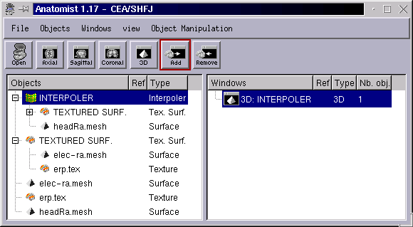

|
Anatomist: placage d'informations surfacique
|
 |
Objets texture
Fusion surface - texture
Textures 2D: jouer avec les tables
de couleurs 2D
Déformation et mise en
correspondance de surfaces
Interpolation de données
fonctionnelles d'une surface à une autre
Objets texture
Fichiers .tex: donnent une ou plusieurs valeurs pour chaque sommet d'un
maillage associé, éventuellement en fonction du temps (séquences
temporelles).
1 valeur par sommet: texture 1D
2 valeurs par sommet: texture 2D
Fichiers d'EEG: répertoires contenant des fichiers .erp et un
fichier de description "erp.hdr": informations (1D) associées à
un filet d'électrodes, pour un certain nombre de sujets, d'essais
et de conditions différents, en fonction du temps. Spécialement
pour ces fichiers, on peut ouvrir une petite fenêtre sur les
textures (dans le menu "Object manipulations", "File", "ERP loader" lorsqu'une
texture est sélectionnée dans la fenêtre de contrôle)
pour contrôler les dimensions supplémentaires qui ne sont
normalement pas dans Anatomiust: sujet, essai.
Les fichiers de texture ne contiennent pas le maillage lui-même.
Les objets texture ne sont pas affichables seuls: on
ne peut pas les mettre dans une fenêtre 2D ou 3D. Ils
sont uniquement destinés à être fusionnés avec
une surface.
Fusion surface - texture
Charger le maillage de la surface (fichier .tri ou .mesh)
Charger la texture
Sélectionner ces deux objets dans la fenêtre de contrôle
Effectuer une "fusion" des deux: dans le menu "Ojbects", choisir "Fusion
objects". Un nouvel object surface texturée ("Textured surf.") est
créé.
Ouvrir une fenêtre 3D
Mettre la nouvelle fusion dans la fenêtre 3D
Modifier la table de couleurs de la fusion (tout est en gris par défaut,
donc très peu visible)
|

(c'est un maillage de filet d'électrodes EEG et un jeu de potentiels
enregistrés) |
Pour les maillages temporels, un slider de temps apparait dans la fenêtre
3D de manière à faire bouger les activations.
Textures 2D: jouer avec les tables
de couleurs 2D
Les textures 2D ont 2 inforations à afficher par sommet du maillage.
Cela veut dire, en gros, 2 couleurs à plaquer sur chaque sommet.
On utilise des tables de couleurs à 2 dimensions.
- soit directement avec une palette 2D (image prédéfinie):
Cerveau gonflé avec informations 2D: en couleur, l'activation;
en foncé: les sillons profonds
- soit en combinant 2 palettes 1D dans 2 dimensions:

Cerveau gonflé avec informations 2D: en rouge, l'activation;
en bleu: la profondeur des sillons |

Matière blanche, le maillage correspond à celui de l'image
du cerveau gonflé, les informations de texture sont identiques |
Déformation et mise en correspondance de
surfaces
Charger les deux maillages dans Anatomist
Effectuer une fusion des deux surfaces: un nouvel objet: un ojbet "surface
matcher" est créé.
Sélectionner cet objet, et ouvrir sa fenêtre de contrôle
dans le menu "Object manipulations", "Fusion", "Surface matching window"
Ouvrir l'objet SurfMatch: il contient 3 objets: les deux surfaces initiales,
plus une troisième, nouvelle: "matchsurf.mesh": c'est celle-ci qui
sera déformée
Ouvrir une fenêtre 3D
Mettre dans cette fenêtre la surface cible et la nouvelle surface
déformable matchsurf.mesh. Au départ la surface déformable
n'apparait pas (elle est vide)

Choisir le sens de la transformation dans la fenêtre de mise en correspondance
de surfaces, en changeant au besoin "from / to"
Cliquer sur "Reset": la surface déformable apparait, dans l'état
correspondant à la surface initiale
Pour y voir un peu clair, il peut être utile de mettre un peu de
transparence sur la surface finale, et une couleur différente (transparence:
dans les matériaux, baisser le coef alpha du paramètre "Diffuse")
Régler les paramètres de mise en correspondance dans la colonne
centrale, "Matching parameters"
Ajouter si besoin des "points de contrôle": points d'attraction directe
entre les deux surfaces
"Record over time", s'il est coché, permet de mémoriser toute
la séquence des transformations itératives dans la surface
matchsurf.mesh, dans une séquence temporelle qui peut ensuite être
sauvegardée sur disque. Attention: ca prend BEAUCOUP de mémoire,
surtout si la surface initiale comporte beaucoup de sommets et de triangles...
Quand tout est prêt, lancer la mise en correspondance avec le bouton
"Start"
Il est possible de changer tous les paramètres, et d'ajouter ou
enlever des points de contrôle en cours de déformation à
mesure que l'on voit comment ça se passe
Lorsqu'on est satisfait du résultat, on arrête en cliquant
"Stop" (ça ne s'arrête pas tout seul: il n'y a pas de critère
de convergence)
Une surface déformée possède le même nombre
de sommets que la surface d'origine, leur ordre est conservé, et
également les triangles: les sommets sont déplacés
sans que quoi que ce soit ne change la structure de la surface: ainsi on
peut utiliser les textures prévues pour la surface d'origine sur
une surface déformée:
Interpolation de données fonctionnelles
d'une surface à une autre
L'interpolation sert à plaquer des données de texture sur
un maillage plus fin que celui auquel il est normalement associé.
Pour fonctionner correctement l'interpolation doit utiliser deux surfaces
"recalées": la surface d'origine doit avoir été déformée
pour correspondre à la la géométrie de la surface
"cible", ce qui peut être fait en utilisant la mise en correspondance
de surface qui vient d'être décrite. Si ce recalage n'a pas
été fait, l'interpolation donnera un peu n'importe quoi et
le résultat n'aura aucune valeur.
Charger les deux surfaces
Charger la texture (données fonctionnelles)
Effectuer une fusion entre la texture et la surface qui lui correspond
(ex: données d'EEG et maillage des électrodes déformé
pour coller à la tete)
Effectuer une seconde fusion entre la surface texturée (1ère
fusion) et le second maillage (ex: celui de la tete)
Mettre cette dernière fusion (objet "Interpoler" ) dans une fenêtre
3D et changer sa palette


Pour le moment il ne s'agit que d'une interpolation linéaire.
L'interpolation prend tout de même un peu de temps de calcul:
ne vous attendez pas à des changements aussi fluides qu'avec la
surface originale quand vous bougez le slider de temps...